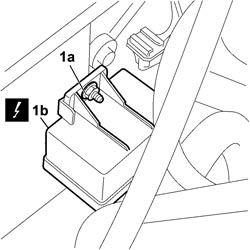
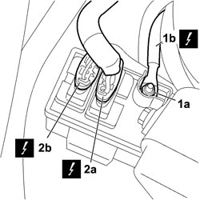

5520C20 HEATER PLUGS CONTROL UNIT - R.R
- Path
- Procedures > 55 ELECTRICAL EQUIPMENT > 5520 ENGINE STARTING > 5520C COLD STARTING SYSTEM (DIESEL ENGINES) > 5520C20 HEATER PLUGS CONTROL UNIT - R.R
- Kind
- repair procedure (removal / refitting; the operation number is the code)
- Applies to
- engines: 1.9 JTD 8v, 1.9 JTD 16v, 2.4 JTD 20v; all production periods
- Interactive page
- https://sloeber94.github.io/elrnDB-fCrm/en/#/194000710
Applies to: engines: 1.9 JTD 8v, 1.9 JTD 16v, 2.4 JTD 20v; all production periods
 Removing
Removing
 Refitting
Refitting- Turn the ignition key to the OFF position.
- Disconnect the negative battery terminal.
Description | Connector | |
|---|---|---|
BATTERY |
1. Undo the nut (1a) fixing the heater plugs control unit (1b) to the partition and rotate it to access the electrical connections.
Description | Connector | |
|---|---|---|
1b | HEATER PLUGS CONTROL UNIT |

Applies to: engines: 1.9 JTD 8v, 1.9 JTD 16v, 2.4 JTD 20v; all production periods
1. Undo the fixing nut (1a) for the electrical connection (1b) and disconnect the connection.
2. Release the mountings and disconnect the electrical connections (2a) and (2b) and remove the control unit from the vehicle.
Description | Connector | |
|---|---|---|
1b | HEATER PLUGS CONTROL UNIT |
Description | Connector | |
|---|---|---|
2a | HEATER PLUGS CONTROL UNIT |
Description | Connector | |
|---|---|---|
2b | HEATER PLUGS CONTROL UNIT |

Applies to: engines: 1.9 JTD 8v, 1.9 JTD 16v, 2.4 JTD 20v; all production periods
Refitting
Removing- Check that the heater plugs control unit is not damaged.
- Connect the electrical connection and secure it using the fastening nut.
Description | Connector | |
|---|---|---|
HEATER PLUGS CONTROL UNIT |
- Connect the two electrical connections and attach them using the mountings.
Description | Connector | |
|---|---|---|
HEATER PLUGS CONTROL UNIT |
Description | Connector | |
|---|---|---|
HEATER PLUGS CONTROL UNIT |
- Secure the control unit to the partition using the fixing nut.
Description | Connector | |
|---|---|---|
HEATER PLUGS CONTROL UNIT |
- Reconnect the negative battery terminal.
Description | Connector | |
|---|---|---|
BATTERY |
Topics linked from this page (2)
Topics that link to this page (8)
- 5505AG CHECK SPARK PLUG HEATING FUSE
- 5520CA HEATER PLUGS OPERATION CHECK
- 1820B58 CLUTCH HYDRAULIC CIRCUIT VIBRATION DAMPER - R+R
- 1820B41 HOSE FROM CLUTCH RESERVOIR TO MASTER CYLINDER (PUMP) - R.R. FOR RIGHT HAND DRIVE VERSIONS
- 1820B52 <x>HOSE FROM MASTER CYLINDER (PUMP TO CLUTCH HYDRAULIC ACTUATOR - R&R</x>
- 3340B53 RIGID PIPE (ONE) FROM MASTER CYLINDER (PUMP) TO ABS HYDRAULIC CONTROL UNIT - R.R. FOR RIGHT HAND DRIVE VERSIONS
- 5530A10 ALTERNATOR - R+R
- 5530A30 ALTERNATOR PULLEY OR FAN - R+R WITH ALTERNATOR REMOVED